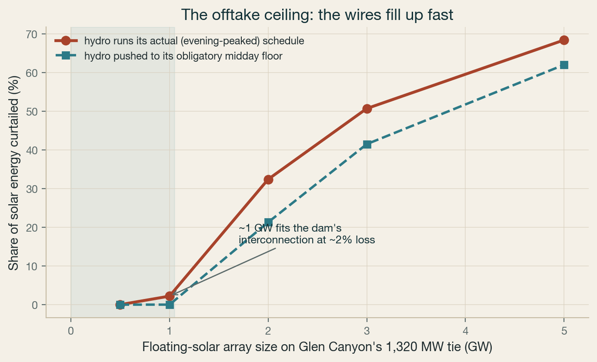
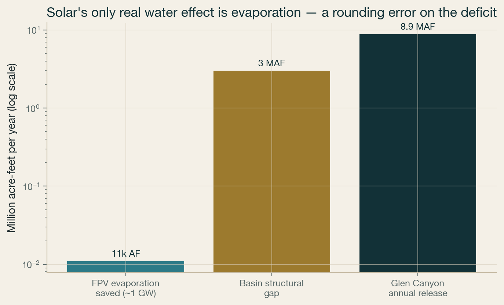
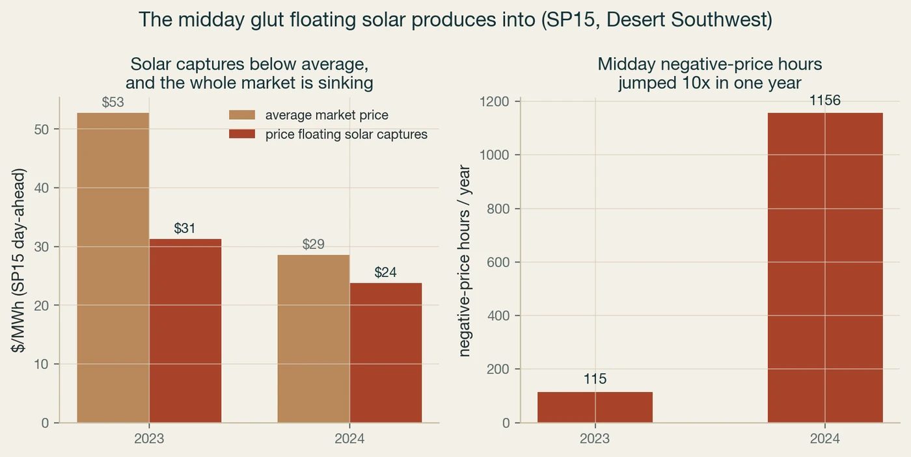
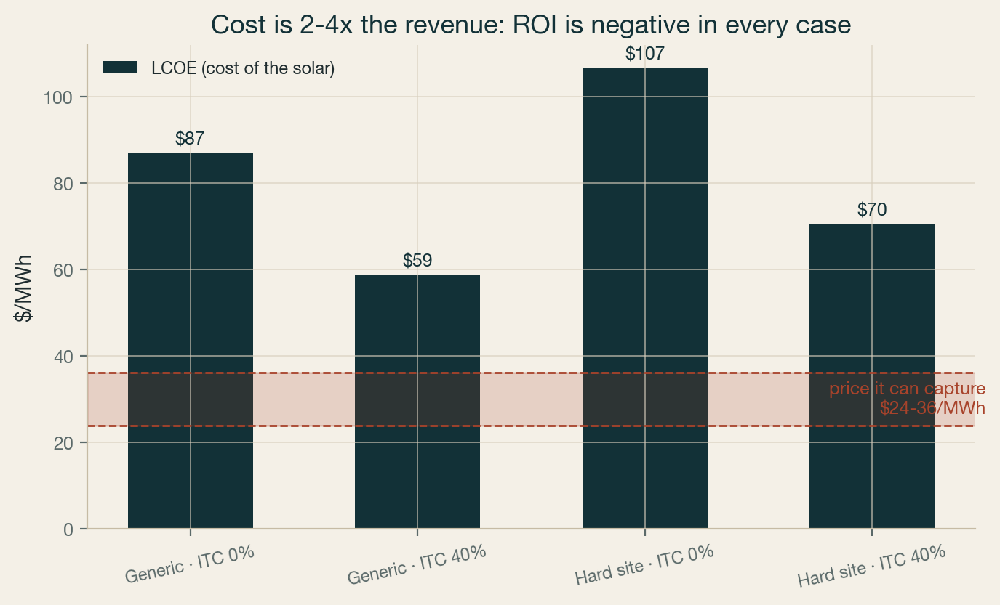
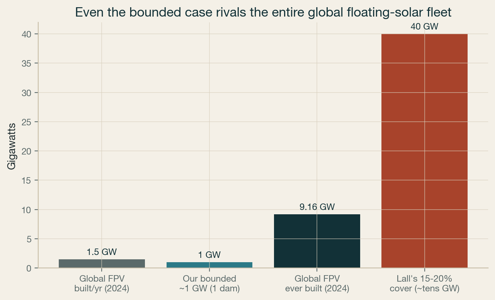

Floating solar on Lake Mead and Lake Powell is an appealing idea — cover the water, cut evaporation, make clean power on infrastructure that already exists. We built the models to test it hour by hour. The honest finding: it is a small, energy-led lever that loses money on today's economics, not a fix for the river's water or a slam-dunk for its power.
Seven constraints set the answer. They stack from the physics of the dam out to the institutions and the industry. None of them is about whether the panels work.
The dam's transmission tie fills up. About 1 GW of solar fits Glen Canyon's 1,320 MW interconnection before curtailment explodes.
Dam releases exist to deliver water downstream. Solar makes electricity, not acre-feet, so it can't cut releases even if the rules are rewritten. Its only water effect is evaporation.
Solar produces at midday, exactly when the Desert Southwest is oversupplied. Negative-price hours jumped 10x in a year, so the price the solar captures is collapsing.
The cost of the solar (LCOE $59-107/MWh) is 2-4x the price it can capture ($24-36/MWh). It loses money in every scenario.
New pumped hydro is dead here (stalled at Hoover, impossible at Glen Canyon, and a nonstarter during the rules rewrite and water scarcity). Batteries are the only near-term option and don't pay for themselves on the arbitrage alone.
Mead and Powell are National Recreation Areas. There is no precedent or leasing path to cover federal reservoir surface with private solar.
Even the bounded ~1 GW is a sixth of all floating solar ever built. It would need a new Western-Hemisphere float supply chain, over 5-10 years.
We ran a full-year, hour-by-hour simulation: weather-driven solar output at Lake Powell against the actual 15-minute water releases below Glen Canyon Dam (a proxy for the dam's own generation), sharing the dam's 1,320 MW interconnection. Up to about 1 GW of solar rides that tie losing only ~2% to curtailment. Past that, curtailment climbs steeply — 32% at 2 GW, 68% at 5 GW — and the energy that actually reaches the grid stops growing. The surface of the lake was never the binding constraint. The wire is.

Click to enlargeA dam's releases exist to deliver water to farms and cities downstream (Glen Canyon released about 8.9 million acre-feet in 2015). That water has to leave the reservoir no matter what the power system does. Solar produces electricity, not acre-feet, so it cannot substitute for a delivery. We tested the counterfactual where the basin's minimum-flow rules are stripped away — they are being rewritten right now — and the conclusion holds: removing the rules lets the dam reshape when it releases, which raises the energy value, but not how much it releases. The only water floating solar truly keeps in the system is the evaporation it shades from under the panels: about 11,000 acre-feet a year at 1 GW. Against a structural deficit of 2-4 million acre-feet, that is a rounding error.

Click to enlargeFloating solar here would produce at midday, exactly when the Desert Southwest is already drowning in solar. Using real SP15 day-ahead prices, the number of negative-price hours jumped roughly ten-fold in a single year, and the price the solar actually captures fell well below the market average — toward $24/MWh if it curtails the negative hours, or about $5/MWh if it must sell into them.

Click to enlargePut cost against captured revenue. The levelized cost of floating solar at these sites is $87/MWh for a generic build and $107/MWh for a hard reservoir site (mooring for 100-180 ft of drawdown, federal permitting, no local float supply chain), or $59-71/MWh with a 40% tax credit. The price it can capture is $24-36/MWh. Revenue covers only about a quarter to a half of lifetime cost. It never breaks even.

Click to enlarge| Scenario | Cost (LCOE) | Captured price | Return |
|---|---|---|---|
| Generic build, no subsidy | $87/MWh | $24-36 | −58% to −73% |
| Generic build, 40% tax credit | $59/MWh | $24-36 | −39% to −59% |
| Hard reservoir site, no subsidy | $107/MWh | $24-36 | −66% to −78% |
| Hard reservoir site, 40% tax credit | $71/MWh | $24-36 | −49% to −66% |
The two things that could help don't close the gap: the ~11k AF/yr of evaporation is worth about $3/MWh even at $400/acre-foot (and no market pays for it), and midday solar earns little firm-capacity credit because it is gone by the evening peak.
Pairing the solar with storage could shift its energy to the valuable evening peak, lifting its effective value to about $36/MWh. But the storage is the expensive, slow part. New pumped hydro at Hoover was proposed by LADWP ($3B, 2,000 MW) and quietly dropped; at Glen Canyon it is physically impossible (no lower reservoir). US pumped hydro runs $1,700-5,100/kW over 10-15 years, and the basin's rules rewrite plus water scarcity make a new water-consuming project close to unthinkable right now. Batteries are the only near-term option and work anywhere — but a ~$12/MWh arbitrage uplift is a 1-3% return on a battery, so they only pencil with stacked capacity, ancillary and tax-credit value, not on energy arbitrage.
Global floating solar totals about 9 GW ever built, growing ~1.5 GW a year, almost all of it in Asia. So a bounded 1 GW at one dam would be a sixth of everything installed worldwide, and a full year of global output. Covering 15-20% of the reservoirs, as some propose, would be several times the entire global fleet. The floats can't be shipped economically, so it would mean standing up a dedicated new float industry in the Southwest over 5-10 years.

Click to enlargeFloating solar at Mead and Powell is a bounded, energy-led lever: about 1 GW, worth roughly $24/MWh into a falling market, saving about 11,000 acre-feet of evaporation. It is not a water-supply fix (it can't change what the dam has to deliver) and not a good energy bet on its own economics (cost is 2-4x revenue, and the storage that would rescue it isn't coming). It only makes sense if a buyer pays well above market for a non-energy reason — a corporate water-positive or goodwill motive, or a firm capacity contract — and even then the surface-ownership question at these National Recreation Areas is unresolved. Worth knowing precisely, so the basin's scarce attention and capital go to the levers that actually move water.
Every number here comes from an open model you can read and rerun. Solar output is weather-driven hourly data (PVGIS); dam releases are USGS 15-minute gage records; prices are CAISO day-ahead (SP15). No proprietary data.
Steps Ventures — independent research, not affiliated with any agency, district, utility, or investor. Figures are engineering estimates from public data; sizing, not a nodal production-cost study. Contact: mike@stepsventures.com.
{kind=link}
{kind=link}
{kind=link}
{kind=link}
{kind=link}